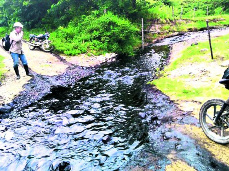

Inicio del blog pensamiento sistémico
Trabajo en equipo
El primer gran reto del PSG.
Es el trabajo hecho por varios individuos donde cada uno hace una parte, pero todos con un objetivo común. Es una de las condiciones de trabajo de tipo psicológico que más influye en los trabajadores de forma positiva porque permite que haya un compañerismo.
A punta de billetera, París Saint-Germain ha intentado en esta temporada recortar
distancias y, de una vez por todas, meterse entre los grandes de Europa…. 

A la guerrilla del Eln atribuyeron las autoridades militares los dos ataques dinamiteros ocurridos el martes de manera simultánea contra el oleoducto Caño Limón Coveñas...
Pilotos no aceptaron propuesta final para levantar huelga, dice Avianca
Ante la prolongación de la huelga de pilotos y la
imposibilidad de lograr un acuerdo en la mesa de diálogo que se adelanta entre
las partes, Avianca tomó la decisión de prolongar durante 9 días
más, hasta el 5 de octubre, la suspensión de la venta de tiquetes.
Avianca manifestó, hacia la 1 de la mañana del miércoles, que la
Asociación Colombiana de Aviadores Civiles (Acdac) no aceptó la propuesta final
que les fue presentada en la mesa de negociaciones liderada por el Ministerio
de Trabajo.
El plazo que se había fijado en esta oferta de Avianca
venció a las 12 de la noche del martes 26 de septiembre.
De acuerdo con Hernán Rincón, presidente ejecutivo de Avianca, quien se
manifestó a través de un comunicado de la compañía, “las peticiones desmedidas
de esta asociación, entre las que incluyó un aumento del 60 por ciento en los
salarios, así como una serie de ventajas y beneficios que exceden los límites
de la empresa, costarían más de 274 millones de dólares anuales, son
inadmisibles al poner en alto riesgo la sostenibilidad y competitividad de la
misma”...